UX/UI Design
Production Line Simulator
A B2B simulation interface for configuring production lines, analysing performance and comparing improvement scenarios.
Goal
Design a scalable simulation platform that helps production teams quickly configure production models, identify bottlenecks, evaluate key performance and cost metrics, and compare improvement scenarios
role
My role was to translate the logic of the calculation model into a usable product experience — from information architecture and data input to analysis, scenario comparison and UI patterns.
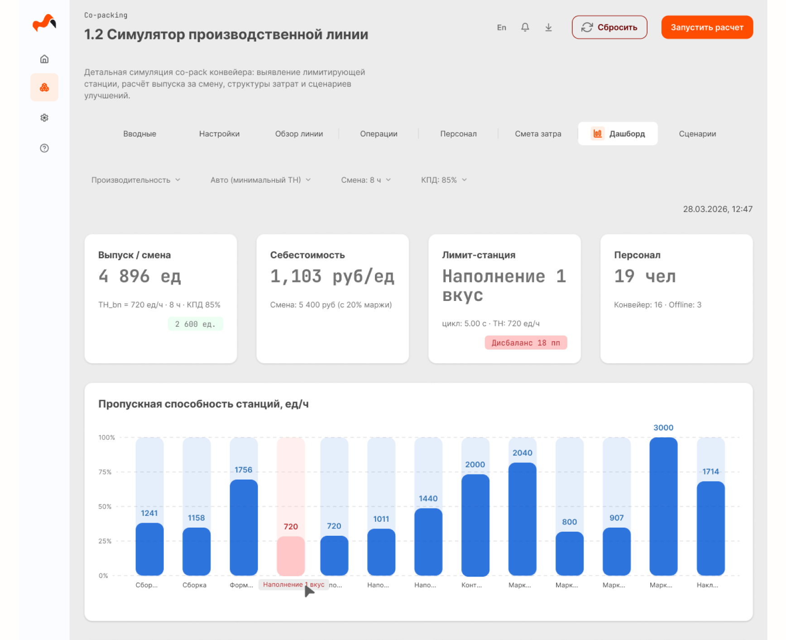
Product
- B2B / Industrial Software
Format
- Demo / MVP
Product Context & Challenge
From a calculation model to a decision-making product
The underlying model combines a large number of interdependent parameters: production stations, operations, cycle time, personnel, shift settings and costs. Changes to one parameter can affect several outputs at once.
The UX challenge was to create a workflow that makes this complexity understandable without exposing the full calculation model at once.
Production Line
Stations · Operations · Cycle Time
People
Roles · Headcount · Rates
Shift
Duration · Efficiency
Costs
Labour · Fixed Costs · Margin
Core
Calculation Model
- Throughput
- Bottleneck
- Cost
- Utilisation
- Scenarios
Structure before data
I separated configuration, production data, analysis and decision-making into distinct working contexts instead of exposing the entire calculation model at once.
What I designed
-
01
Structured tabs
Each working area is organized into a dedicated tab.
-
02
Compact overview
Key line parameters and current results stay visible regardless of the active tab.
-
03
Contextual actions
Actions are placed next to the information they relate to.
Core user flow
01
Select model
02
Configure parameters
03
Configure line
04
Recalculate
05
Find bottleneck
06
Analyse results
07
Compare scenarios
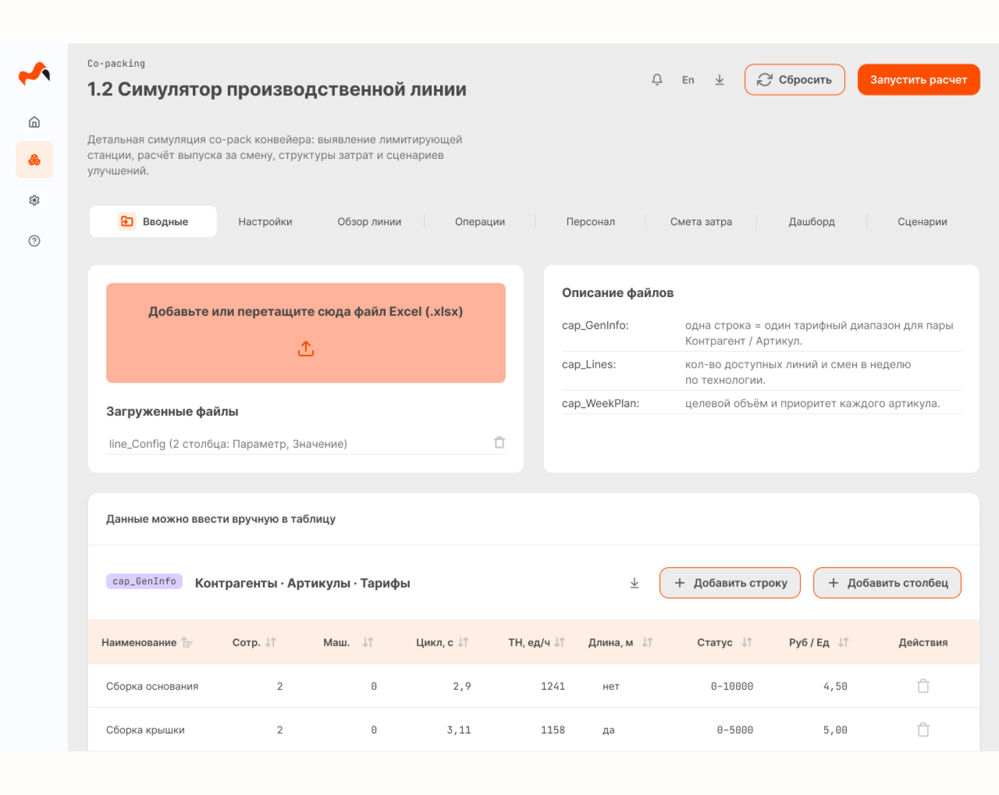
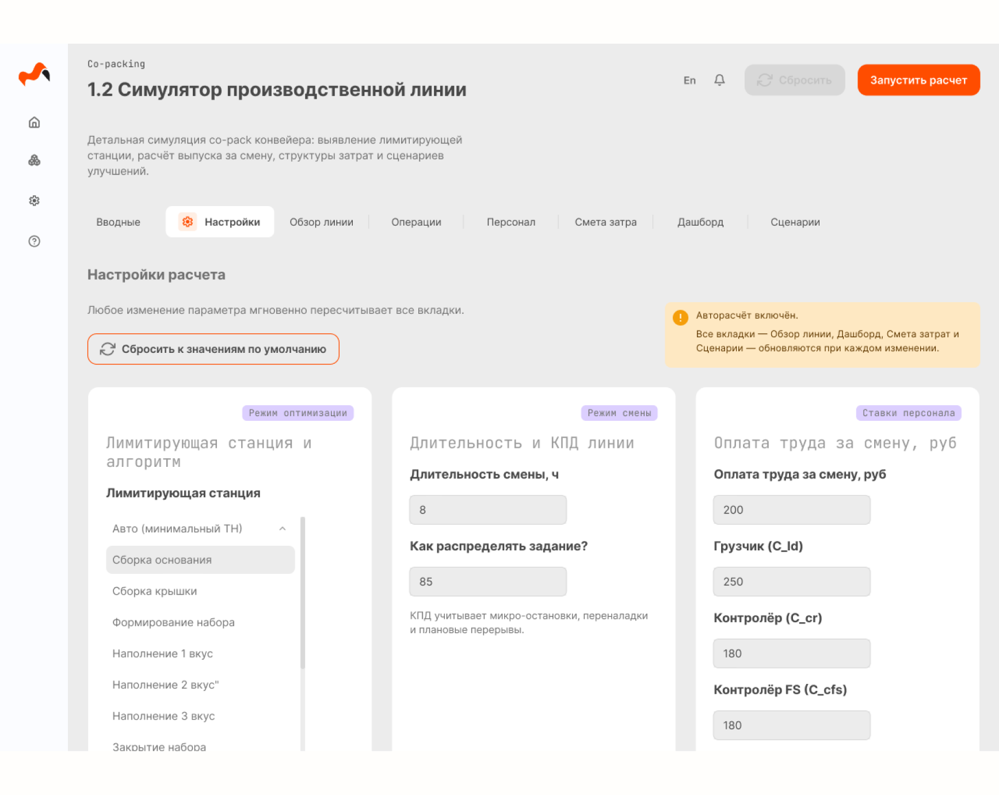
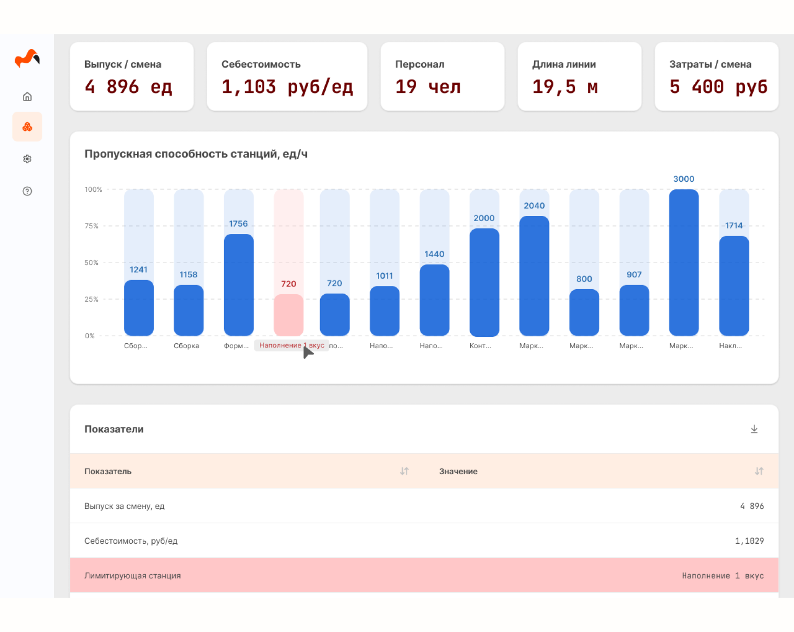
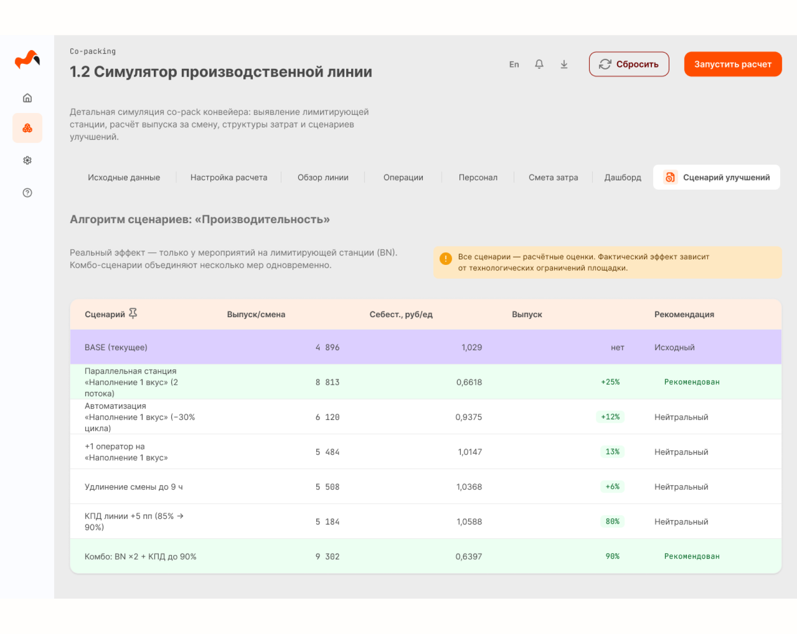
Three decisions that shaped the product experience
Edit where you see the data
Production-line configuration contains many interdependent values. I used inline editing so users could modify data directly in context instead of opening separate dialogs.
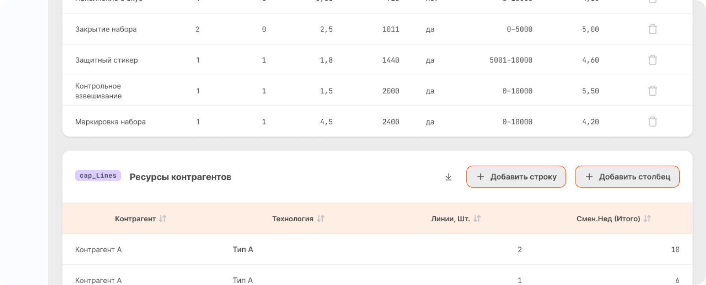
Shorten the distance between action and result
Because the model is intended for rapid experimentation, the workflow was designed around automatic recalculation.
Every change triggers an immediate update across KPIs, bottleneck indicators and charts.
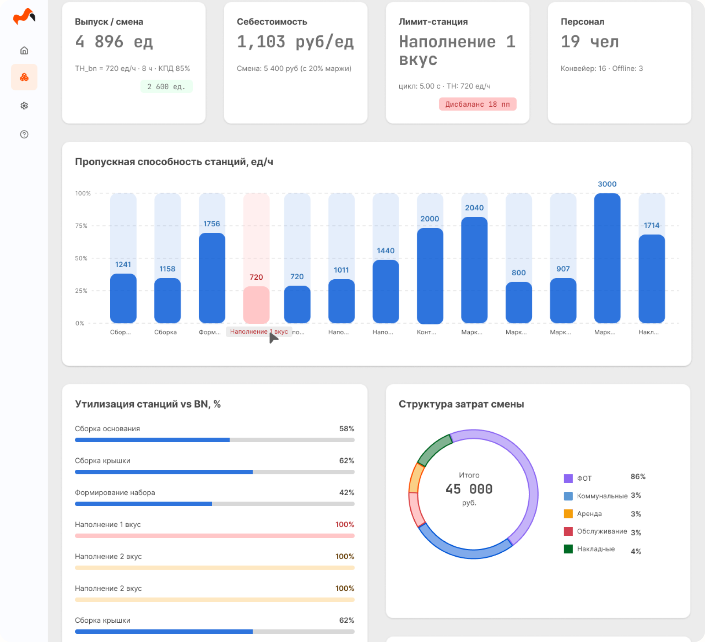
Make the bottleneck visible
The bottleneck is a key output of the model: the station with the lowest throughput determines the production capacity. I surfaced it at three levels simultaneously — table, KPI and chart — so it becomes a visual anchor rather than a value hidden inside a calculation.
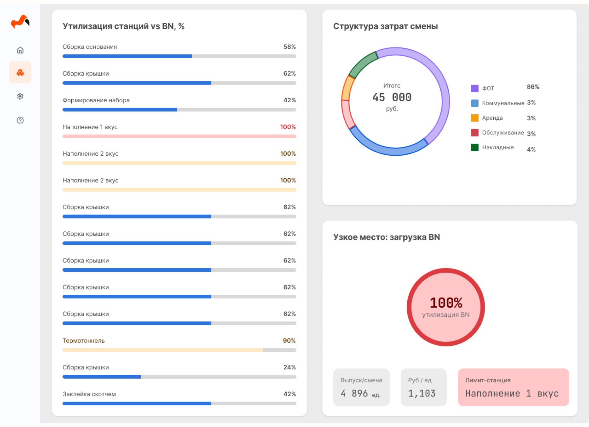
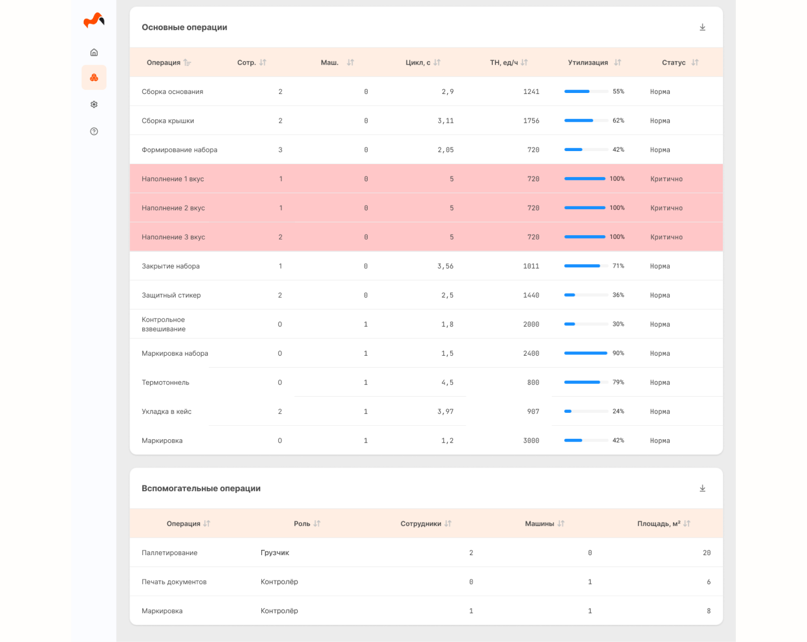
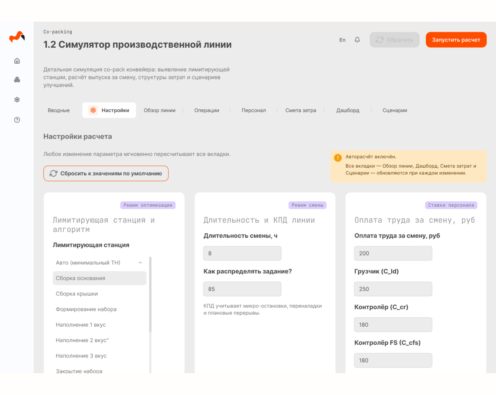
The result should explain what to do next
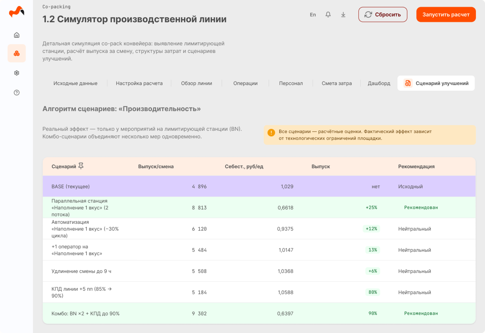
Result
Product Outcome
Demo launched
The production line simulator was designed, built and released as a working demo in production.
Bottlenecks became visible
The production bottleneck became a clear visual element across the interface, helping users quickly identify the limiting station and understand its impact.
Production data became actionable
Structured large volumes of interconnected production data into clear tables, KPIs and visualisations, making key performance indicators easier to interpret.
Predictable next actions
Constraints
The product was developed as a demo/MVP, so some calculation and optimisation mechanics were simplified. The interface still had to support realistic workflows, including large editable tables, Excel import, validation and automatic recalculation.